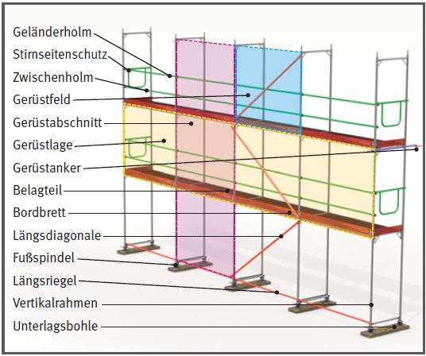
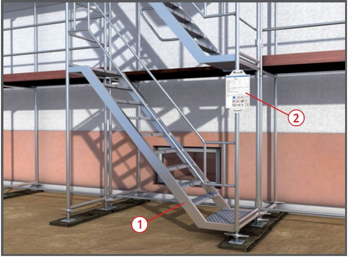
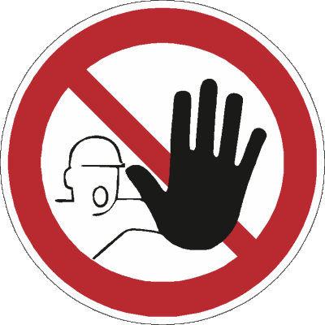

Fassadengerüste |

| Lastklassen der Arbeitsgerüste | |
| Lastklasse | Gleichmäßig verteilte Last kN/m2 |
| 1 | 0,75 |
| 2 | 1,50 |
| 3 | 2,00 |
| 4 | 3,00 |
| 5 | 4,50 |
| 6 | 6,00 |
| Breitenklasse/Breite w der Gerüstlage in m | |
| W 06 | 0,6 < w < 0,9 |
| W 09 | 0,9 < w < 1,2 |
| W 1,2 | 1,2 < w < 1,5 |
| W 1,5 | 1,5 < w < 1,8 |
| W 1,8 | 1,8 < w < 2,1 |
| W 2,1 | 2,1 < w < 2,4 |
| W 2,4 | 2,4 < w |
Untergrund
Verankerung

Zugänge 
Gerüstbelag
Seitenschutz
Kennzeichnung

07/2021